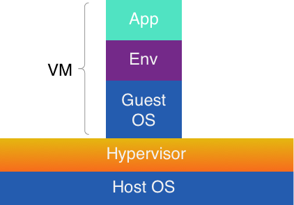
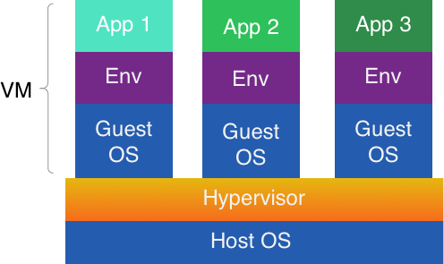

I'm a DevOps
Overview
- Why do we need something else?
- What is Docker?
- Trying it out
- Tips and tricks
Dependencies
Software does not work in vacuum
Except you are in space
🛰
Your basic web app requires:
- Web server (Nginx, Apache)
- PHP
- SQL DBMS (PostgreSQL, MySQL)
A few steps forward add:
- NoSQL DBMS (ElasticSearch, Redis)
- Message broker (RabbitMQ)
- Cache
- WebSocket
Dependencies! 😡
You develop 2 projects.
They require:
- different configurations of the same dependency
- different versions of the same dependency
It steals your time!
Estimate the price of adding new PHP extension
Deployment and scaling
It would be good to have
- Ubiquitous dev, staging and prod environment
- Persistent environment configuration shipping
- Fast deploy
- Easy manage

 |
Let's start our first app
What happened?
- PHP image downloaded
- Container created
- php -v executed
- Container stopped and removed
Virtualization
vs
Containerisation
Virtual Machine (VM)
- Emulates everything around.
- Starts from a system image.
- Supports different Guest OS on same host.
- Takes time to boot.
- Guest OS is not as efficient is Host
Virtualization
Same OS, same env, different apps
Virtual Environment (VE)
- No emulation – uses host kernel containerization.
- Fast start – only 50 ms
- Can use layered file systems (Overlay2, AuFS).
- Minimal performance impact.
Docker is an interface for containers management

Docker

Questions?
 |